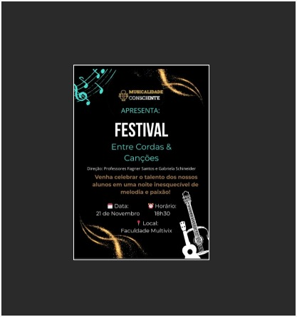
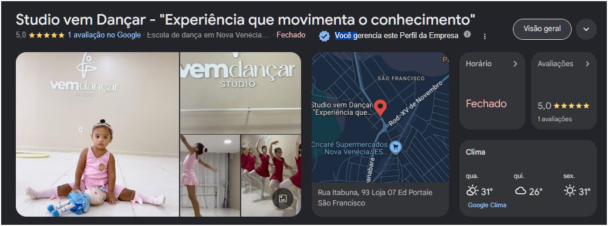
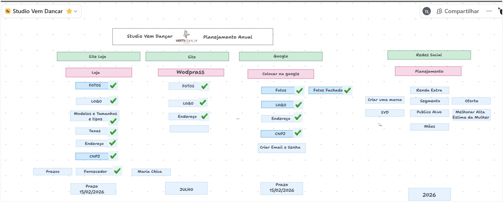
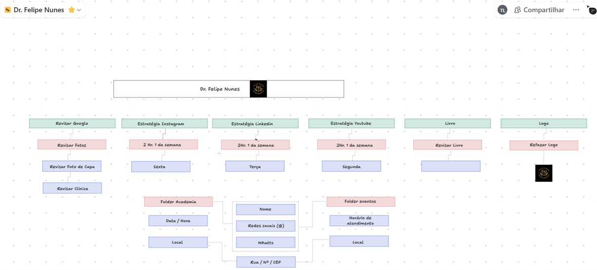

Demonstração dos Projetos
Apresentação aprofundada dos sistemas web desenvolvidos, gravações de tela em ambientes desktop e mobile, interfaces responsivas, dashboards analíticos e materiais de comunicação digital.
00. Jogo de Rotina da Clarice
Um jogo interativo RPG 2D construído com JavaScript puro (Vanilla) e Canvas API. Desenvolvido para transformar as tarefas diárias e rotineiras de uma criança em missões engajadoras. Conta com sistema de mapas (apartamento, cidade, escola, bombeiro e igreja), troca dinâmica de música (WebAudio API) dependendo da localização, ciclo de dia e noite real, sistema de Pokedex (Rotina-Dex) com loja virtual e controles adaptativos para celulares (touch) e desktop.

01. Kids App / Crachá Kids Porta da Paz
Aplicação web desenvolvida com HTML, CSS e JavaScript puro focada em resolver o fluxo de identificação e segurança de crianças em eventos sociais. Funciona em modo offline-first, com edição ágil de crachás, impressão padronizada e interface 100% responsiva.
02. Musicalidade Consciente
Gestão visual e digital integral do projeto musical: concepção de identidade visual e logotipo, confecção e diagramação de diplomas oficiais, artes de divulgação para canais digitais e gravação da navegação interativa do E-book.

03. Studio Vem Dançar
Plataforma web institucional completa desenvolvida para escola de dança, com vitrine de modalidades, grade horária, integração com e-commerce de produtos e foco direto em conversão de matrículas via campanhas de tráfego pago.


04. Dr. Felipe Nunes — Nutricionista
Projeto estratégico de autoridade profissional na área da saúde e nutrição: criação do logotipo institucional e estruturação visual/diagramação de funis de conteúdo e captação de clientes.

05. Simone — Inspetora Escolar
Soluções completas de otimização operacional escolar. Painel analítico de controle de alunos, relatórios e métricas, além de edição de vídeos dinâmicos aplicados em treinamentos e comunicados institucionais.
06. Desenvolvimentos Pessoais
Laboratório de criação e estudo de novas tecnologias: ambiente de desenvolvimento com painel administrativo interativo para testes de código, além do portal devocional planejado para leitura e estudos comunitários diários.
07. Desenvolvimento Espiritual — Igreja em Casa
Aplicação web responsiva (Single Page Application) desenvolvida em HTML5, CSS3 e JavaScript puro para acompanhar a jornada devocional diária do grupo Igreja em Casa. Conta com personalização de perfil com foto, controle de progresso salvo localmente (LocalStorage), diário pessoal de anotações, alternância entre tema claro e escuro e geração automatizada de relatório formatado para impressão.